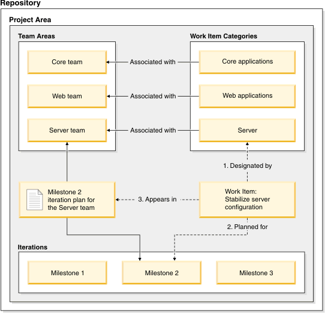

Plans and work item management
Important: Plans and work item management is not available in Netbeans plugin for Rational Team Concert. Following information relates to web user interface.
Team
leads and team members can use plans to manage their work items
that are planned for completion for a release, backlog, or an
iteration. As work items are created, they are assigned to a
category. A team lead later assigns the work item to a milestone.
Plans can be associated with a team area or project area. If the
work item categories are associated with a team, Jazz™
displays work items in the responsible team's plan based on the
work item's category and planned iteration settings. If the work
item category is not associated with a team area, a project area
is used.
Before beginning work on a plan, define the
timelines, iterations, team areas, and work item categories for
your project. If you do not have team areas, you can create a
plan for a project area.
The following figure outlines the relationship of
how categories, team areas, and iteration schedules help assign
work items to the appropriate team and plan. With these
relationships, team members can view and manage work items for
all iterations within their corresponding plans. The steps for
creating and using a plan are presented in the topics in this
section of the help.
Figure 1. Work item categories and
iteration schedules drive team assignments
